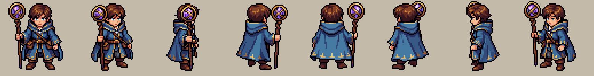
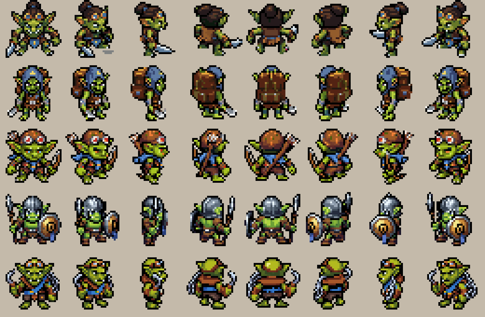
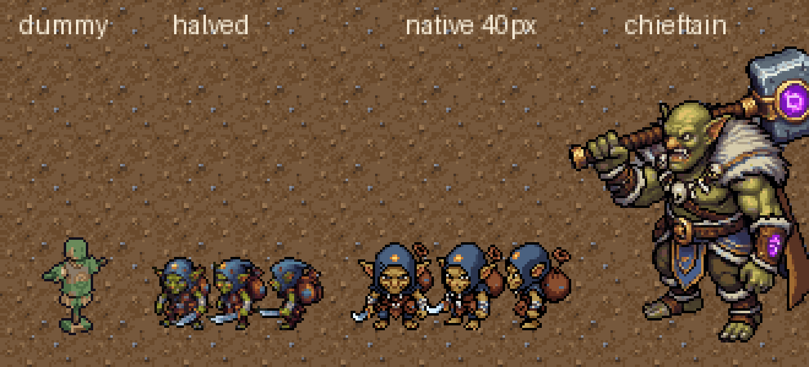
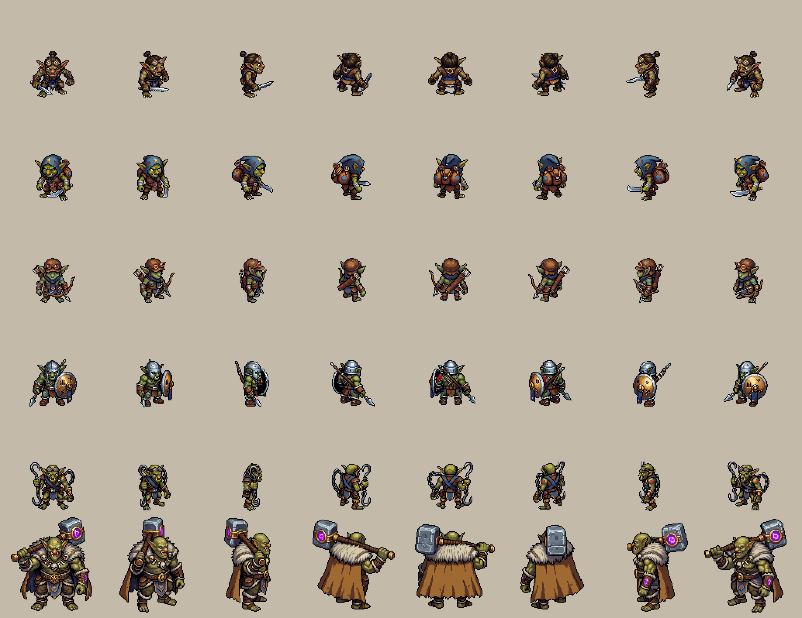
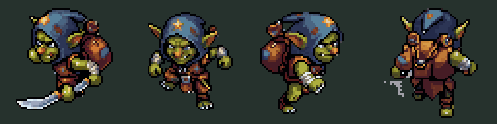

Goblin Warband Art
The warband from the opening's encounters, bought from PixelLab as real 8-direction sprites to replace the code-drawn placeholders. Each prompt follows the concept sheet: scrappy opportunists in patched leather, blue academy cloth worn as trophies, a shield cut from a machine panel, and a brass-banded maul.
Marks and notes save as you go. An empty box means my pick stands.
Spent: 36 generations
Left this month: 1,600
Resets: 7 Dec
Start here: size against the game's wizard
Where each picture comes from:
- PixelLab: every goblin you'd use, both rounds, the run animation, and the blue wizard below. Round 1 drew them at 64 px, round 2 at 32 px.
- Codex: only the two magenta sheets at the end of round 2, and the two rows marked Codex. Codex was the experiment; it lost.
- The game: the small red-hat wizard and the rig goblins, painted by the game's own code at their true size.
 Every row starts with today's in-game wizard (29 px with its hat), all at true relative size. Today's goblins are 15 px: chest height on the wizard. Even the round 2 goblins are as tall as it, and the chieftain is four wizards tall.
Every row starts with today's in-game wizard (29 px with its hat), all at true relative size. Today's goblins are 15 px: chest height on the wizard. Even the round 2 goblins are as tall as it, and the chieftain is four wizards tall.
So the question is the game's pixel density, not the goblins. Today the game draws a wizard about 29 px tall. All the bought art is drawn at about twice that density. There are two ways to make it fit:
- Keep today's density. Goblins would have to be drawn about 16 px tall and the chieftain about 60. Most of the detail you see here would go.
- Double the game's density. Wizards become 60 px sprites like the one below, and the round 2 goblins and the chieftain fit as they are. The cost: the wizards need real sprites (the code rigs would be redrawn or replaced), the camera shows half as much ground at the same zoom unless it zooms out, and the bought props look small at this size, so they'd need upscaling or redrawing.
 The fight at doubled density, everything 1:1: two PixelLab wizards (60 px), the round 2 goblins, the chieftain, and props we own.
The fight at doubled density, everything 1:1: two PixelLab wizards (60 px), the round 2 goblins, the chieftain, and props we own.

The PixelLab wizard (2 generations), all eight facings at 3×. Bought to show the doubled density; the game still uses its code wizard.
Round 2: PixelLab at 32 px vs two Codex paths
Round 1's goblins were too big next to the props, so round 2 redrew them smaller and tried Codex as well. Judged here beside the training-dummy prop; the lineup above compares them with the game's wizard instead.
 A: PixelLab, drawn at 32 px (10 generations). B: a Codex sheet of the five, converted to pixel art. C: a Codex turnaround of one raider in eight directions, converted at its own pixel grid. Last row: PixelLab's raider in all eight directions.
A: PixelLab, drawn at 32 px (10 generations). B: a Codex sheet of the five, converted to pixel art. C: a Codex turnaround of one raider in eight directions, converted at its own pixel grid. Last row: PixelLab's raider in all eight directions.
- A wins. Crisp silhouettes, bright green skin that stands off the dirt, every prop readable, and the same goblin in every direction.
- B has the best designs but can't shrink. The Codex sheet is drawn with about 100 px of detail per goblin, so at 30 px it turns to mush. Its green was also an illusion: the skin is yellow-olive and only looked green against the magenta.
- C is usable but second. Codex held one goblin through eight directions by itself, which is new. Converted, it's darker and blobbier than A, with tan skin and a strap it invented on the sack.
So the path is PixelLab drawn at the target size, with Codex for design sheets. The two Codex originals are at the end of this section.

PixelLab, round 2: the set, all facings at 5×. Rows: goggled raider, hooded raider, archer, shieldbearer, hooker. One stray grey cluster under the goggled raider facing south-east can be cleaned for free.
 Codex: the five, facing the viewer (B's source).
Codex: the five, facing the viewer (B's source).
 Codex: the hooded raider in eight directions (C's source).
Codex: the hooded raider in eight directions (C's source).
Round 1: PixelLab at 64 px, in a fight
The band on the game's own ground tiles, next to props we already bought (a training dummy, crates, a bush, a banner). This is a picture, not the game: nothing is wired in yet.
 Top: as bought. The small goblins are drawn at twice the props' pixel density, so they look oversized and too detailed. Bottom: halved locally to match. The size is right, but the faces turn to mush.
Top: as bought. The small goblins are drawn at twice the props' pixel density, so they look oversized and too detailed. Bottom: halved locally to match. The size is right, but the faces turn to mush.
The chieftain already fits: it is drawn at the props' density and stands twice a wizard's height, as the concept asked. The small goblins are the problem. To fit, they need to be drawn at about 30 to 36 px tall, not shrunk afterwards.
Round 1: drawn small vs shrunk

Left to right: the dummy, the 64 px raider halved locally, the same raider generated at 40 px (2 generations), and the chieftain.
Generated small is clearly better: chunky shapes, a readable face, blade and sack. Two things to fix in a redo: its skin came out tan instead of green, and at 36 px it stands as tall as the dummy, while the concept has raiders at about 0.6 of a wizard's height. A 32 px canvas would fit better.
Round 1: what came back (PixelLab)

All eight facings at 2×. Rows: goggled raider, hooded raider, archer, shieldbearer, hooker, chieftain (128 px canvas; the others are 64 px).
Mark each: Keep the design, Redo it, or Cut it. "Keep" means keep the look; the small ones would still be redrawn at the right size.
Motion test (PixelLab, round 1)
One bought animation before buying more: the hooded raider's template run, 6 frames, all eight directions (8 generations).

South-west, south, east, north.
- It stays the same goblin in every frame. The blade and sack hold their shape instead of morphing.
- The stride is short; it reads as a jog more than a sprint.
- Facing east, the blade hides behind the body for half the cycle. North frame 1 has a stray 3-pixel fragment at the feet.
The brief
 The concept sheet from the opening's encounters. Inspiration only; the archer's board is a separate prop in the game.
The concept sheet from the opening's encounters. Inspiration only; the archer's board is a separate prop in the game.